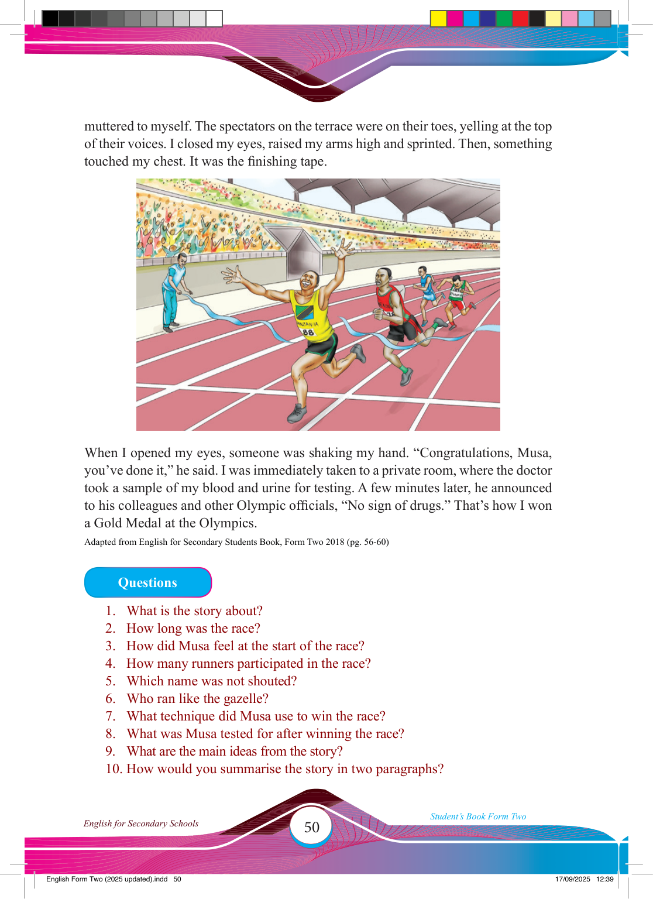

50
Student’s Book Form Two
English for Secondary Schools
muttered to myself. The spectators on the terrace were on their toes, yelling at the top
of their voices. I closed my eyes, raised my arms high and sprinted. Then, something touched my chest. It was the fi nishing tape.
When I opened my eyes, someone was shaking my hand. “Congratulations, Musa,
you’ve done it,” he said. I was immediately taken to a private room, where the doctor
took a sample of my blood and urine for testing. A few minutes later, he announced to his colleagues and other Olympic offi cials, “No sign of drugs.” That’s how I won a Gold Medal at the Olympics.
Adapted from English for Secondary Students Book, Form Two 2018 (pg. 56-60)
Questions
1. What is the story about?
2. How long was the race?
3. How did Musa feel at the start of the race?
4. How many runners participated in the race?
5. Which name was not shouted?
6. Who ran like the gazelle?
7. What technique did Musa use to win the race?
8. What was Musa tested for after winning the race?
9. What are the main ideas from the story?
10. How would you summarise the story in two paragraphs?
17/09/2025 12:39